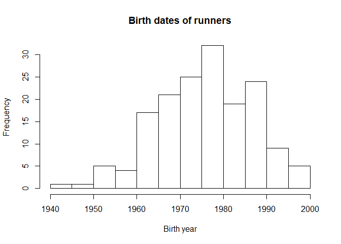

Hi everyone!
I am continuing my journey to learn awk and I finally managed to process (almost) an entire file today so let’s analyse the 2018 Tencin trail race. It was my first trail race of the season, and it kicks off the “challenge intercommunal du grésivaudan”, which is a set of 11 races in this region called the Grésivaudan which is a valley in between the two mountains of Belledonne and Chartreuse in the Alps. Tencin was my favorite race this year, it was so much fun! It was also one of the hardest ones because the climb is very steep (for me) but the descent was pretty easy. The weather was beautiful and it was a small event so it was a very chill race. The views were wonderful, and we were running around very rural areas so it felt like I was far away from everything. But the best part was the people cheering everyone on when they crossed villages and especially at the finish line. People around really motivate you to try as hard as you can on the last few hundred meters, even when you are among the last people to cross the finish line, they make you feel just as special as the first person to cross it. Another best part was the food: I have been constantly hungry since I began running and at aid stations at the race they had my favorite race food: “pâte de fruit”, which was so cool! I absolutely loved that event and will be returning for sure! If you’re into a little bit of steep climb and a beautiful course, I highly recommend you participate if you can, and you can bring your dog to do cani-cross.
OK, Let’s jump in the data analysis part now using R, my favorite programming language:
First look at the data
I found the data on this website. I processed the file with awk, and a little manually or using macros from notepad++. Let’s have a look at the data and pull up all the columns of the dataframe:
## [1] "Classement_general" "Nom"
## [3] "Prénom" "Licence"
## [5] "Dossard" "DateNaissance"
## [7] "Classement_categories" "Cat"
## [9] "Classement_scratch" "Genre"
## [11] "Temps"
There are 163 total people who ran the race, everyone finished. There were 35 women constituting 21.4723926 % of all runners and 128 men making up the remaining 78.5276074 %. The huge women/men number difference is not unusual in trail races yet.
Plotting the number of participants per category for men and women

As per usual, the biggest category is the senior category in men and women, followed by veteran 1 then veteran 2. There are usually very few junior and espoir runners. Another thing I’ve noticed that is also showed here is that in the veteran categories, men tend to run more when they are older so we have veteran 3-5 in men but sometimes not at all in women.
Age of runners
We can see the age of runners more precisely than for categories in this next graph:

This plot shows that most runners were born between 1970 and 1982. The youngest runner was from 2000! It makes me feel so old that people from 2000 are turning eighteen this year…
Let’s pull up a statistical summary of this data using the function “summary()” from base R:
overall: 1944, 1968, 1976, 1976.2331288, 1984, 2000
for men: 1944, 1967, 1975, 1975.046875, 1984, 1999
for women 1962, 1975.5, 1978, 1980.5714286, 1987.5, 2000
According to these summaries, women who race tend to be younger on average (1981 for women versus 1975 for men and the oldest man born in 1944 versus 1962 for women). That sounds a little strange to me, why don’t older women still race, or start racing, especially in local races like this one? Maybe the trend will disappear in a few years, I hope so!
Finnish times according to place at the finish line
Now let’s plot the finish times according to their place:
There are two different parts in this graph: the denser sigmoid is the men’s one and the less dense one that is just slightly sigmoid is the women’s one. The men’s plot is pretty standard from other runners data I’ve analyzed so far with spaced out runners at the front and at the back end and a very dense exponential phase in the middle. The women’s data today, since there were so few of us looks a bit more linear, maybe even a little logarithmic at the end. There is also a gap around 2:15-2:20 (we were having way too much fun back there to hurry up…I was filming and taking pictures, and met two runners with their dogs and we had a nice chat about cani-cross).
Correlation between bib number and place
Now this is just silly for this kind of race, but is there a correlation between bib number and place?

As we can see there really is no correlation for this race. If you’re curious why I did this it’s because in some races it is actually relevant, you bib number indicates which start group you are in and that depends on your estimated arrival time.
That’s all for today! I’m doing quite a few trail and road races this year, and maybe a couple new sports so you can expect more of those analyses, I’ll try to keep them a little different each time and learn different ways to look at this kind of data, so make sure you come back for that. If you have any remarks, or want me to look at specific sets of data, let me know using my social media links! I will also post pictures of races and training there. See you next time!
Sciathlon
As usual the code is below:
#load libraries
library(readODS)
library(chron)
library(sqldf)
library(ggplot2)
#read data and set column names
tencin_tbl <- read.ods("tencin_data_2018.ods", 1)
colnames(tencin_tbl) <- tencin_tbl[1,]
tencin_tbl <- data.frame(tencin_tbl[2:nrow(tencin_tbl),1:ncol(tencin_tbl)])
#sort out the birth dates in case they are in wrong format
for(i in 1:nrow(tencin_tbl)){
if(as.numeric(tencin_tbl$DateNaissance[i]) > 18){
tencin_tbl$DateNaissance[i] <- paste("19", tencin_tbl$DateNaissance[i], sep="")
}else{
tencin_tbl$DateNaissance[i] <- paste("200", tencin_tbl$DateNaissance[i], sep="")
}
}
#display column names:
colnames(tencin_tbl)
#plot the categories
ggplot(sqldf("select Cat from tencin_tbl"), aes(x=Cat, fill=substr(tencin_tbl$Cat, 3, 3))) + geom_bar() + ggtitle("Men and women participants per category") + scale_fill_discrete(name="Category")
#plot birth years
hist(as.numeric(tencin_tbl$DateNaissance), main="Birth dates of runners", xlab="Birth year")
#plot times vs place
plot(as.POSIXct(strptime(tencin_tbl$Temps, format="%H:%M:%S")), tencin_tbl$Classement_scratch, main="times according to place", xlab = "time of arrival", ylab="place")
#plot bib number vs place
plot(as.POSIXct(strptime(tencin_tbl$Temps, format="%H:%M:%S")), as.numeric(substr(tencin_tbl$Dossard, 3, nchar(tencin_tbl$Dossard))), main="times according to place", xlab = "time of arrival", ylab="Bib number")